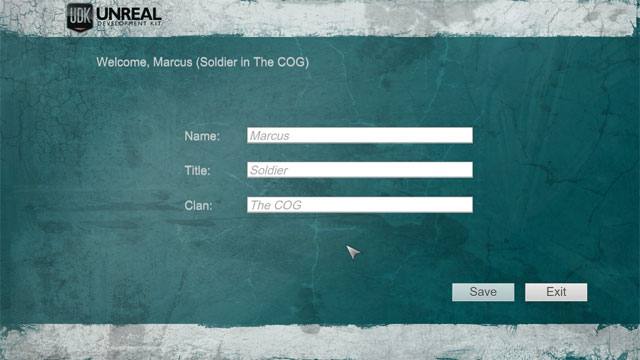
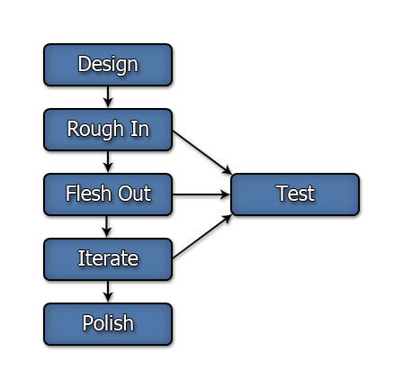

Getting Started: Scaleform GFx
Setting up Scaleform GFx
In order to get Scaleform GFx set up, you need to:
- Install the Scaleform GFx Launcher in Adobe Flash professional - the Scaleform GFx Launcher allows you to test scenes created in Adobe Flash Professional without needing to import them into UE3 and run the game. This allows for quick and efficient iteration.
- Install the CLIK library in Adobe Flash professional - The CLIK library contains a pre-made set of widgets for use in game UIs. The library must first be installed in Adobe Flash Professional before these elements can be used in your scenes.
- Set up a coding environment for ActionScript development - Flash has a built-in ActionScript editor that can be used. However, there are a few other coding environments for ActionScript, each with their own strengths and weaknesses. Choosing the one that best suits your needs can result in a better workflow and efficiency.
The Setting Up Scaleform GFx page will walk you through getting up and running and have you on your way to creating user interfaces with Scaleform GFx and Unreal Engine 3.
Scaleform Quickstart
Sometimes jumping right in is the best way to get your feet wet. The Scaleform GFx Quick Start example follows the creation of a basic UI using Scaleform GFx from creation in Adobe Flash Professional to seeing the final product running inside Unreal Engine 3. This should help to give you a better understanding of what the process involves and give you a starting point for creating your own UIs.

Scaleform Workflow
It is important to have a solid workflow when creating UIs with Scaleform. A poor workflow can result in wasted work due to redesigns or bugs creeping in that are difficult to tack down.
An example workflow arrived at due to lessons learned from the development of Gears of Wars 3:

See the Scaleform GFx Workflow page for a tips on how to optimize your workflow when using Scaleform to create UIs for use in Unreal Engine 3 games.
Scaleform Terminology
It will help to follow along with the Scaleform GFx documentation if you understand the terminology being used. What is the difference between a movie and a movieclip? What are CLIK components? What is "bagging"? Etc, etc.
The Scaleform GFx Terminology page contains explanations of important and commonly used terms when developing with Scaleform GFx and Unreal Engine 3.
Scaleform UI Content Guide
There are a great deal of topics on the content side that need to be considered when making your Scaleform UIs. From how you set up the scene in Flash to what kinds of textures you use to how you handle fonts; knowing about the gotchas and avoiding them can help to avoid any headaches or wasted time due to tracking down bugs.
If your Scaleform menu is displayed over a level, how you set up that level can have a large impact on the appearance and performance of the menu itself. You may also want to open, close, or control Scaleform UIs from within a level either in response to level events or player input.
The Scaleform Content Guide is a complete guide to creating content for Scaleform UIs and designing levels for use with those UIs in Unreal Engine 3.
Controlling Scaleform Through Code
The interaction between Unreal Engine 3 and Scaleform is mainly handled through code, via a combination ActionScript or UnrealScript. Knowing how data and commands are passed between the two is extremely important, though it is completely feasible to use UnrealScript for the majority of the code driving your Scaleform UIs.
The Scaleform Technical Guide covers all aspects of programming with Scaleform GFx for Unreal Engine 3.
Important!
You are viewing documentation for the Unreal Development Kit (UDK).
If you are looking for the Unreal Engine 4 documentation, please visit the Unreal Engine 4 Documentation site.